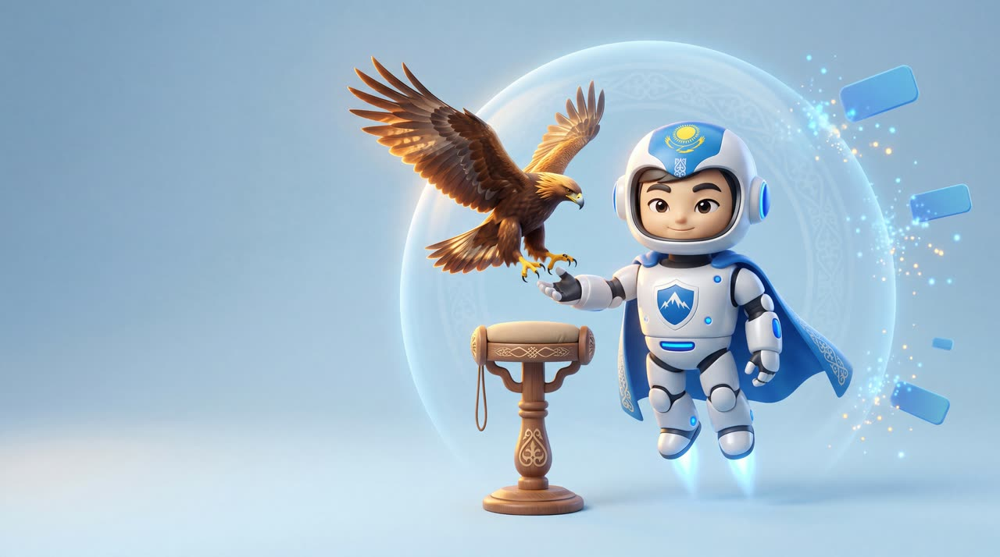

Сервис
фильтрации
интернета
Убираем трекеры и рекламу на твоих устройствах.
- Меньше рекламы — на всём устройстве: телефон, компьютер, телевизор. Не только в браузере
- Трекеры не ходят за тобой по приложениям
- Фильтруем на уровне сети. Рекламу, которую площадка встраивает прямо в своё видео или ленту, это не уберёт — говорим сразу
- Живой человек на связи, если что-то не работает
Тугы́р — рифмуется с «мир». По-казахски «тұғыр» — опора, насест, на который садится ловчая птица. Мы — опора для твоего интернета.
Доступ по приглашению. Попасть можно только от того, кто уже с нами.